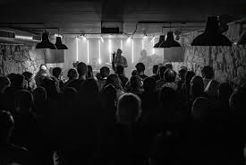

O Projecto
A cultura que não aparece nos guias turísticos.
O Porto Alternativo nasceu de uma falha óbvia: a dificuldade em encontrar os eventos mais underground e autênticos da nossa cidade. Enquanto as grandes salas e festivais mainstream dominam a publicidade, a verdadeira cena alternativa do Porto acontece em caves, armazéns e associações culturais que raramente chegam ao grande público.
Aqui não há algoritmos nem interesses comerciais. Esta agenda é alimentada por quem vive a cidade à noite, por quem gosta de techno industrial, punk, metal, ou arte experimental. O nosso objectivo é simples: dar visibilidade ao invisível.
Queremos que esta plataforma seja o ponto de partida para descobrires aquele concerto de uma banda nova em Cedofeita ou aquela noite de electrónica num armazém em Campanhã.
Porquê?
Porque o Porto é muito mais do que a Ribeira e os Aliados. É cimento, é ruído, é arte e, acima de tudo, é comunidade.

Cedofeita, Porto — 2024